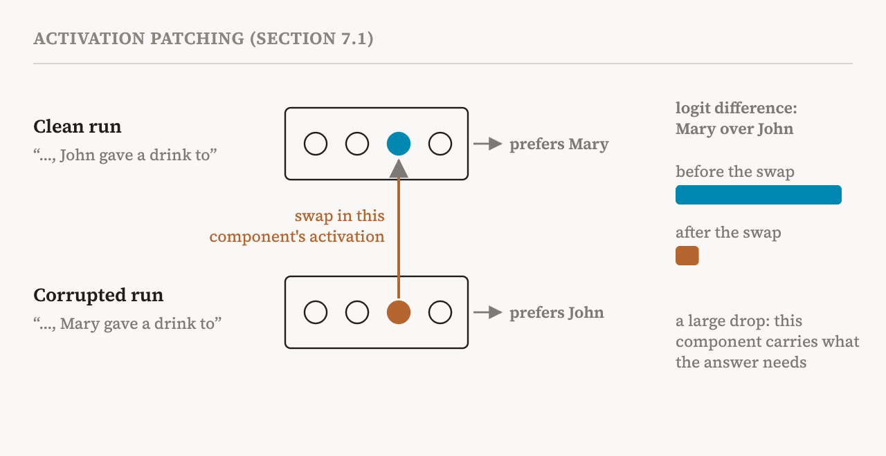
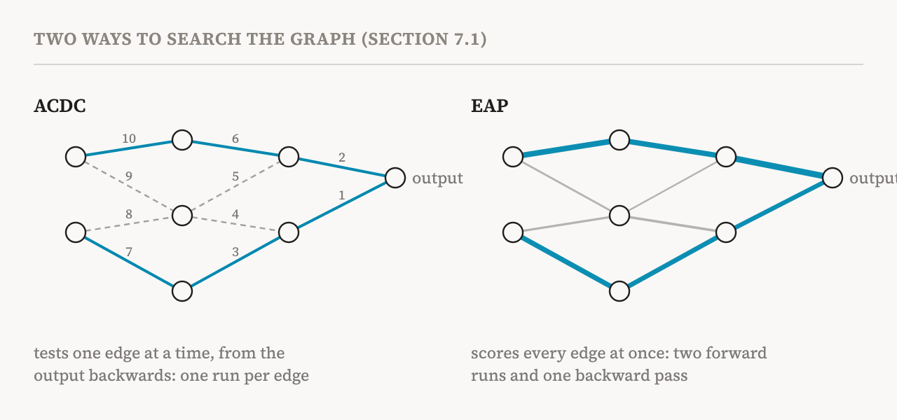

Part 6 defined a circuit as the small part of a model's computational graph that carries out a particular behaviour. Parts 10 to 15 then gave us better units for the nodes of that graph. This part, which starts the group on circuits, asks how the graph is actually found. It covers the opening of the book's seventh chapter and section 7.1 (pages 53–55).
The book notes first that circuits are not the only way to describe a mechanism. In the 1990s, researchers sorted the hidden states of recurrent networks into a small number of states and described the network's processing of a sentence as a finite-state machine, moving from state to state word by word. But circuits have become the dominant framework, and the methods below are the ones the field mostly uses.
The basic move: activation patching
Nearly every method in this part builds on one experiment, activation patching. Take an input, run the model, and record a single number that measures the behaviour you care about, such as how strongly the model prefers the right answer. Then run the model on the same input again, but this time replace the activations of some components with different values, and record the number again. The difference between the two is the causal importance of those components for this input.
A running example makes it concrete, and the book's companion notebook uses exactly this one. Take the indirect object sentence from part 6: "When Mary and John went to the store, John gave a drink to". GPT-2 should continue with "Mary". A common measure is the logit difference: how much higher the model scores "Mary" than "John". Now make a corrupted version that changes one word: "When Mary and John went to the store, Mary gave a drink to". Here the right answer flips to "John".

To test whether some attention head matters, run the clean sentence, but swap in that head's activation from the corrupted sentence. If the logit difference collapses, the head was carrying information the answer depends on, roughly "which name was repeated". If it barely moves, the head did not matter for this behaviour. The book notes that the replacement values usually come from such a corrupted run, which changes the input to add or remove specific information, but some studies use zeros or the average activation instead. These choices are not neutral; a 2024 study of best practices showed that they can change the conclusions.
Path patching
Activation patching asks whether a component matters. Path patching asks whether a particular connection between two components matters. Think of the computational graph from part 6: the output of component i feeds into component j as one of its inputs. Path patching replaces only the activation sent along that one edge, leaving the rest of i's output untouched, and measures the effect. That localises information flow much more finely. It can show, for instance, that a head matters only because of what it sends to one particular later head.
ACDC: automating the search
Testing every edge by hand would be hopeless in a model with thousands of them. Automatic circuit discovery, ACDC, from 2023, automates path patching. It starts at the output and works backwards through the graph. For each edge, it patches the activation sent along it and measures the change in the task metric. If the change is smaller than a chosen threshold, the edge is pruned. Otherwise it is kept, and the edges feeding into it are examined in turn. What remains at the end is the circuit.
ACDC directly searches for a subgraph that is enough for the behaviour, which is exactly what a circuit should be. Its cost is speed: every edge it tests needs its own run of the model. And the result depends on the order in which edges are pruned and on the threshold.
Attribution patching: estimating instead of measuring
Edge attribution patching, EAP, from 2024, estimates every edge's effect at once instead of measuring each in turn. The trick is a first-order approximation, the same idea as estimating how far a car will go in the next second from its current speed. For each edge, the effect of patching is approximated by the gradient of the metric with respect to the activation on that edge, multiplied by how much that activation differs between the clean and corrupted runs.

The gain is enormous. All the scores come from just two forward runs, one on the clean input and one on the corrupted input, plus a single backward pass that computes all the gradients together. ACDC needs a separate run for every edge. The simplest way to build a circuit is then to keep the edges with the highest scores. The price is that a first-order approximation can miss nonlinear effects and interactions. Later methods improve the estimate, such as EAP with integrated gradients, which averages gradients along a path from the corrupted to the clean activation, or extend patching across positions in the text to capture interactions between tokens.
Circuits by optimisation
A third family treats circuit discovery as an optimisation problem. Instead of testing edges, it uses gradient descent to learn which parts of the computational graph can be removed without changing the model's behaviour. Edge pruning learns a mask over edges; other work learns masks over nodes at several scales, from whole blocks down to single neurons. These methods usually find sparser circuits than patching or attribution. But the optimisation adds randomness and sensitivity to settings such as the learning rate, which can make the circuits they find less robust and harder to interpret.
Task-level and query-level circuits
Part 6 met the two lines of circuit research. The book returns to them here with a methodological point. Task-level circuit discovery looks for the circuit behind a whole capability, defined by a dataset of examples such as the indirect object identification dataset. The scores of components and edges are averaged across all the inputs, to reduce the noise of individual examples, so the circuit describes the task as a whole. Query-level discovery explains one particular prompt.
Almost all the methods above, patching, ACDC, EAP, EAP-IG and the pruning methods, were developed and evaluated in the task-level setting. A 2026 study by two of the book's authors extended EAP-IG to individual prompts. That makes it possible to find sparse but faithful circuits even for complex, natural requests from users, where the relevant computation can differ greatly from one input to the next.
The methods compared
| Method | Core idea | Strength | Limitation |
|---|---|---|---|
| Activation patching | Replace a component's activation and measure the change in output | Simple; direct causal evidence | Needs many interventions; components can be coarse units |
| Path patching | Replace the activation along one edge | Finer localisation of information flow | Expensive, because there are many paths |
| ACDC | Prune edges greedily while checking the behaviour survives | Fully automated; searches directly for a sufficient subgraph | Slow; sensitive to pruning order and threshold |
| EAP | Estimate every edge's effect with gradients | Fast and parallel; scales to many edges | First-order approximation can miss nonlinear and interaction effects |
| SAE- or CLT-based | Find circuits over interpretable features instead of raw components | Finer, feature-level circuits | Depends on feature quality; extra cost to train the dictionaries |
The last row is the subject of part 17. The companion notebook implements the first and fourth rows on GPT-2, with the Mary and John prompts above.
| Term | Meaning |
|---|---|
| Activation patching | Replacing some components' activations and measuring how a behaviour metric changes |
| Clean and corrupted runs | Runs on the original input and on a minimally changed one with a different right answer |
| Logit difference | How much higher a model scores the right answer than a chosen wrong one |
| Ablation by zero or mean | Replacing an activation with zeros or with its average value instead of a corrupted run's |
| Path patching | Replacing only the activation sent along one edge between two components |
| ACDC | Automatic circuit discovery: pruning edges one by one, from the output backwards |
| Edge attribution patching (EAP) | Estimating all edges' patching effects at once with gradients |
| First-order approximation | Estimating a change from the current slope, ignoring curvature and interactions |
| Integrated gradients | Averaging gradients along a path between two inputs, for a better estimate |
| Edge pruning | Learning, by optimisation, which edges can be removed |
| Task-level circuit | A circuit for a capability, averaged over a dataset |
| Query-level circuit | A circuit for one particular prompt |
Next, part 17 looks at circuits whose nodes are interpretable features: replacement models and attribution graphs.